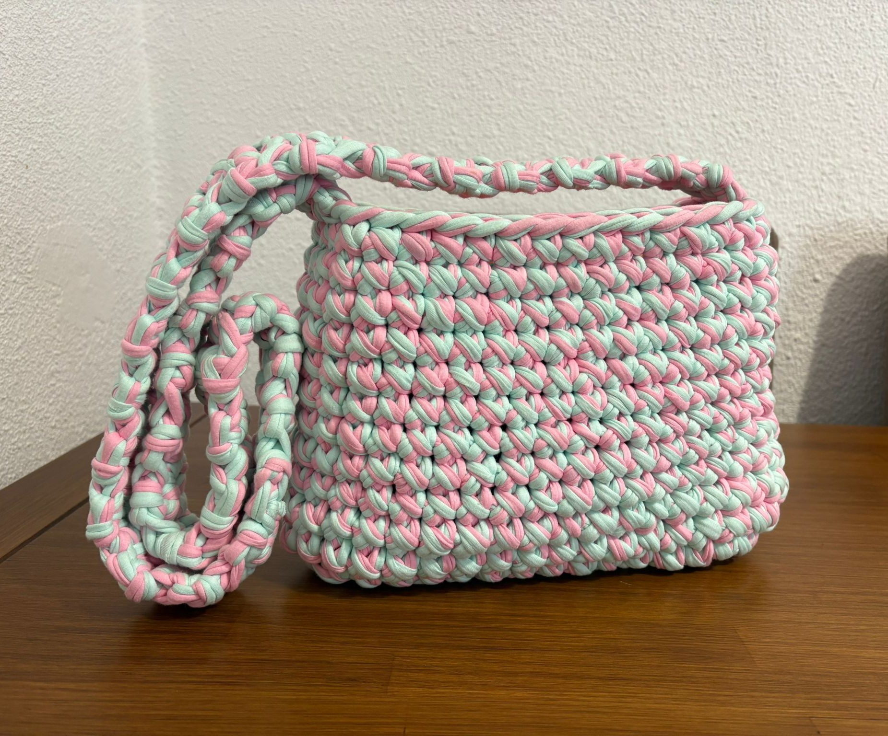

Venta de carteras a mano diseñada por Zamira
Diseñadas con trapillo de alta calidad, resistentes,
suaves y perfectas para cualquier ocasión.
Cada pieza es elaborada con dedicación y cuidado,
garantizando un producto exclusivo y diferente.
Perfecta para regalos, salidas especiales y uso diario.
Disponible en varios colores.
17.99$